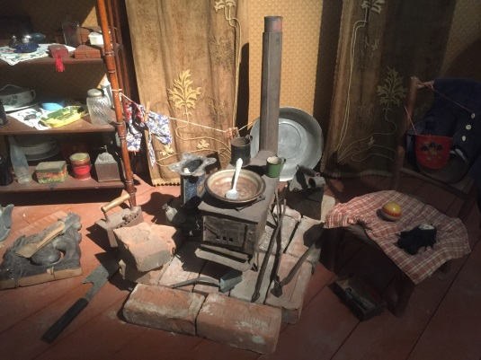

Задание 2. Возле печки на полу (слева) лежит деревянный «фрагмент» музыкального инструмента, который приготовили для растопки печки, угадайте, что это было? Ответы на здание указывайте в форме ответа 